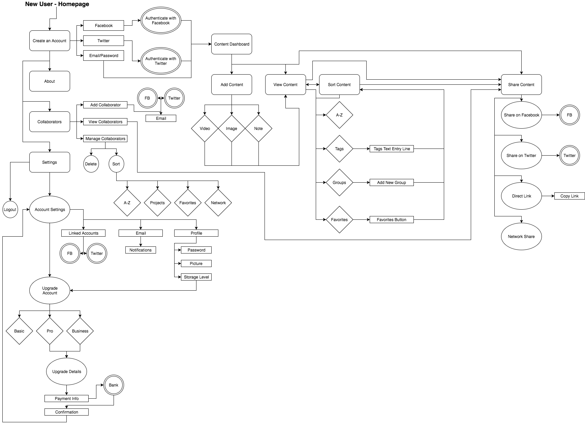
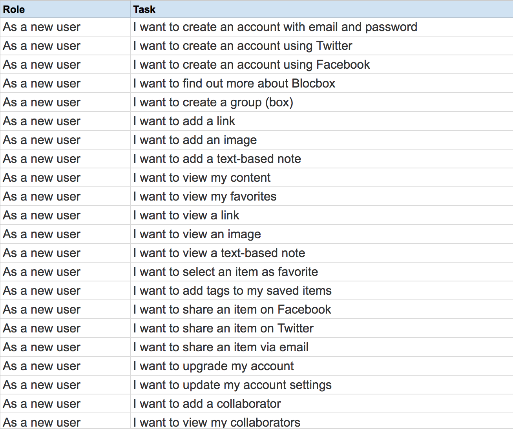
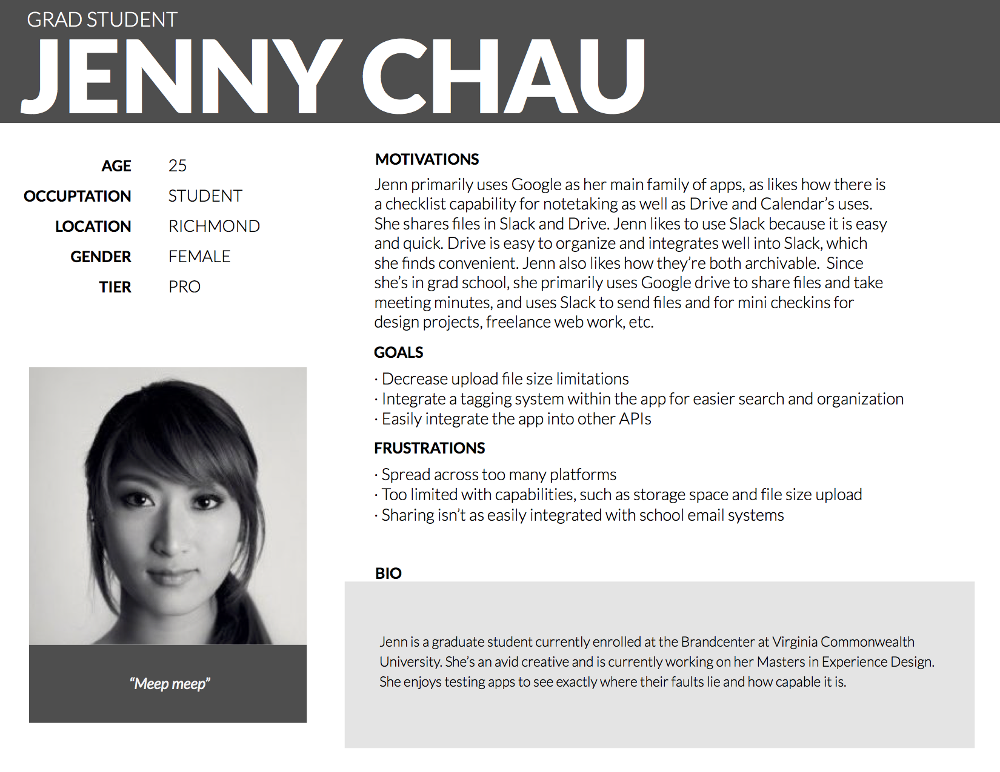
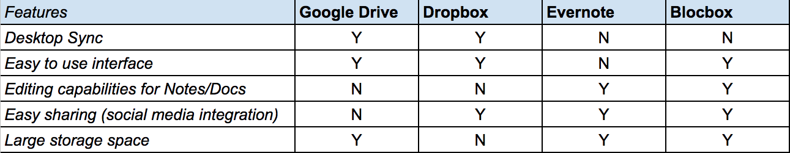
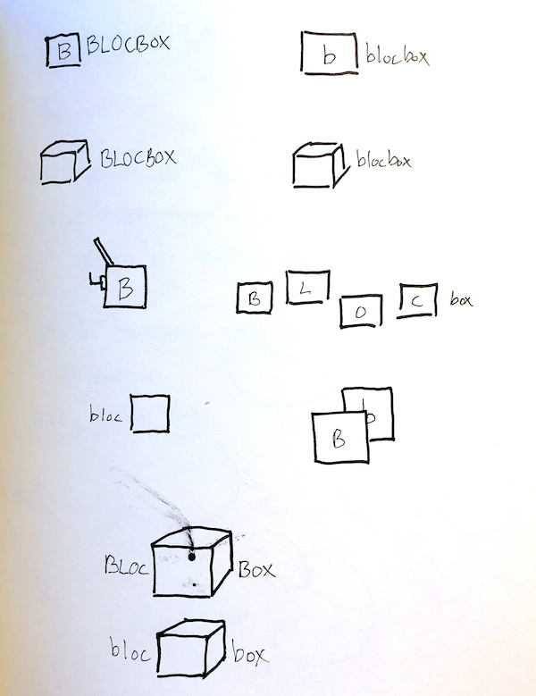

Blocbox

Blocbox aims to give users the ability to store notes, images and links directly onto the web for easy access. Blocbox is a simple to use product that aims for collaborative storage and multiple projects with Boxes.
The Problem
Currently, users were not satisfied with cloud storage websites and technologies used to save notes, links and images, with some stating that it was not easy enough to do so and others stating that current technology isn’t satisfactory in their capabilities. Some of the top pain points were:
The Solution
Blocbox has these features to enhance the user experience and ease pain points during the process:
Research
My process started off with brainstorming a user flow and coming up with user stories for what a typical user wanted out of their cloud storage experience.

From here I went on to gathering research data, focusing on these specific points for the survey:
Survey can be seen here
Results can be seen here
After gathering user research, I wanted to deep dive into more information to ensure the best product. After interviewing some potential users more in-depth, I came up with 3 User Personas in Illustrator on which to base the target audience for Blocbox off of.
See the other User Personas here
I also did some preliminary competitive analysis to see if there was a viable solution to our existing problem already. The three companies I chose to look at were Google, Dropbox and Evernote.
Ideation
Upon completion of our competitive analysis and finding that no competitors offered all the features we wanted to incorporate, I began to ideate our logo and come up with a style guide for future work.
See more digital Logo sketches here
For the logo design, I wanted to keep things very simple and minimal. I had decided early on that our large scale project collaboration was going to be called Boxes, and so with that in mind I decided a minimalist logo of a lowercase B within a box would be appropriate. Our style guide was based off complimentary bold colors, with a dark blue as the primary color and a bright orange as a call to action color.
Wireframing
After the style guide was finished, I went on to wireframe Blocbox using Balsamiq.

Above is the wireframe I created for the Dashboard. In total, we created wireframes for the following pages:
Click here to see all wireframes
Mockups
As I was designing my wireframes, I based my decisions on ensuring all my user stories were reflected in the design. I went through several iterations of the homepage, with the first being based off the guide that Bloc provided for this project, and then the other 3 were created with more freedom in choice. After the wireframes were completed, I went on to design medium resolution mockups in Illustrator.
Click here to see all medium resolution mockups
As a user, I want to view my content

After our medium resolution mockups were done, the time came to design hi-fi mockups for our prototype. Using the style guide, I made subsequent small changes to the medium resolution mockups for the final design. Our dashboard remained largely the same, with some small changes made for where the Account icons would go. I felt the upper right corner was more natural of an area a user would go to for Account Info, rather than the bottom left hand corner. I also wanted to make sure the collaborator icon was next to it, so the top right corner could be the "people" section. I then moved the "Add" button to the left hand nav so that could be the "content" section.
Some changes were also made to the homepage. The version of the homepage that I decided to go with for the final design was the 4th wireframe iteration, as I felt it offered a good balance in terms of hierarchy:
As a user, I want to add an image, a text-based note, or a link

After finishing up the homepage, I went on to showcase how users would create content in the dashboard. The three types of content a user could create were Notes, Images and Links. My designs were meant to be highly visual, yet still have an excellent user experience by making the process very easy and intuitive to use in comparison to other platforms. With this in mind, I wanted users to be able to drag and drop items into the browser to upload content, as well as have simple call-to-action buttons to indicate content upload.

Within the content itself, I designed simple yet effective ways to touch on these user stories:
Icons would indicate where the user could favorite an item, add tags, delete the content, and share their content. A simple auto-save feature in the upper right corner would enable a smoother experience so the user wouldn’t have to worry about lost changes. Finally, the ability to add the content to a project (Box) would enable collaboration on large scale projects.

As a user, I want to create an account, upgrade my account, and update my account settings
For our user account, I kept things simple with only necessary information, like Name, Profile Pic, Email and Password, and an intuitive upgrade feature. A text indication underneath the Save Changes button would indicate to users whether or not their changes were made successfully, smoothing out the overall experience. To upgrade, the user followed these steps:
The original version of the Credit Card information had billing address included as well, but I felt as if that took away from the overall user experience in time management and opted out of including it in my final design.

As a user, I want to add, view and manage my collaborators
The last user story I worked on was with the collaborators function of Blocbox. The gray hover effect at the bottom of an item indicated how many collaborators were currently on it, while a collaborator icon with a drop-down menu in the upper right hand corner took you to the collaborators page where a user could view and manage their collaborators.
Prototyping
The final step was to send out our full prototype for user testing, record their feedback and make subsequent small changes to reflect that feedback. Overall, Blocbox was well received by the majority of users who tested it. Users praised how visual the overall content system was. They also enjoyed how easy the product was to use and the collaborative features.
User Testing Feedback
Front End Development
After prototyping, I also built two static pages for the homepage and the dashboard using HTML, CSS and Javascript for some simple interactions.
Live Version Homepage
Live Version Dashboard
Conclusion
Doubts
My doubts going into this project was that it may be impossible to design a product that would cater to simple, I-just-want-to-save-stuff users as well as collaborative, heavy-use users.
Surprises
What surprised me the most was how tricky it was to code our design from scratch, as it was my first time using the front end development skills I learned at the Bloc course.
More Time/Resources
If I had more time or resources, I would have made sure that user testing reached a larger audience since user research data is the backbone of good UX design.
Takeaways
A final point of feedback was that Blocbox needed something to make it really stand out above the competition. This was my first project where I applied the design process and front end development skills I learned from Bloc. It was extremely enjoyable, and while the front end development was an enjoyable challenge, it definitely opened my eyes to the whole UX design process and how I wanted it to be my main focus after the program.
More Projects